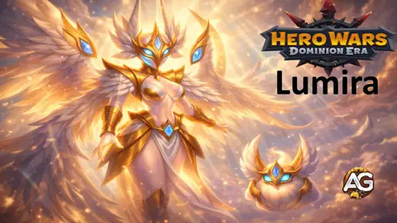
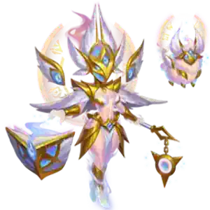
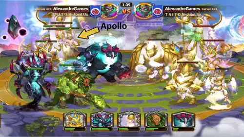
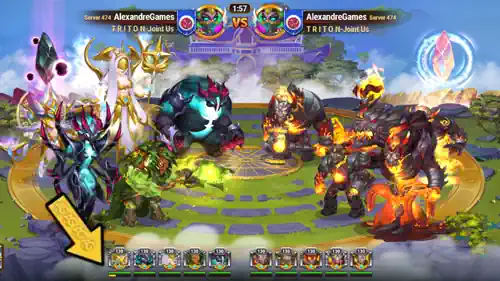
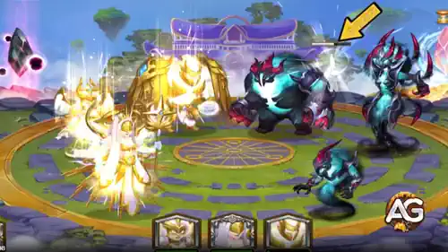
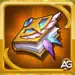
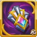
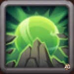
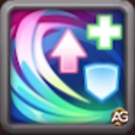

Lumira Guide: Master the Light Summoner for Hero Wars Dominion Era
- By: Alexandre Domingos. .
Have you ever wondered what it would be like to have a guardian spirit fighting alongside your team — someone who takes the blows meant for your allies and, even in death, grants your entire squad a moment of pure invincibility? That's exactly what Lumira brings to the table. She's not your typical titan. She doesn't charge in swinging a massive weapon or blast enemies with elemental fury. Instead, Lumira summons Apollo, a radiant protector who absorbs half the damage your team takes and, when he finally falls, shields everyone around him for a brief but game-changing second of total immunity.
If you've been struggling to keep your titans alive in PvP or dungeon battles, Lumira might be the missing piece you've been looking for. Her unique summoner role combined with the devastating Light Spirit Totem's Supernova — which literally prevents your entire team from dying for 5 full seconds — makes her one of the most underrated defensive powerhouses in Hero Wars: Dominion Era. In this complete guide, I'll walk you through every single detail of her skills, the best skins and artifacts to evolve first, which totem fusions make her unstoppable, and the exact team composition that I personally tested to beat every elemental team in the game 10 out of 10 times. Let's dive in!


📋 Lumira Table of Contents
Who Is Lumira?
Lumira is the only true summoner among titans in Hero Wars: Dominion Era — a radiant Light titan who channels her power not through brute force, but through the bond she shares with her summoned guardian, Apollo. Instead of dealing massive damage directly, Lumira protects her entire team by redirecting incoming attacks through Apollo, creating a layered defense system that can keep even the most fragile allies alive through devastating enemy ultimates. When Apollo finally falls, he grants a brief window of total invincibility to all allies in his aura — a mechanic that can single-handedly turn a losing battle into a victory.

- Role: Summoner
- Element: Light
- Position: 24 (Back Line)
- Power: 218,574
- Attack: 1,067,115
- Elemental Attack: 479,475
- Health: 11,261,285
- Elemental Armor: 175,467
- Synergy: Light Titans, Apollo (Summon)
Lumira Pros & Cons - Hero Wars: Web & Facebook
✅ Pros
- Apollo's Damage Redirect: Apollo absorbs 50% of every attack aimed at allies in his aura (capped at 266,779 per hit), dramatically extending your team's survivability.
- Invincibility on Apollo's Death: When Apollo falls, ALL allies within the aura become completely invincible for 1 second — enough time to dodge lethal ultimates or buy time for a counter-attack.
- Fast Energy Generation: Lumira starts every battle with 30% energy already charged, meaning she summons Apollo much faster than most titans can fire their first ultimate.
- Light Totem Accelerator: Generates 10% more energy for Light Totem activation, which speeds up the devastating Supernova skill that prevents your entire team from dying for 5 seconds.
- Apollo Can't Be Targeted: Enemies cannot directly attack Apollo — he can only take damage through the redirected hits, meaning opponents can't focus-fire him down on purpose.
- Incredible Defense Performance: In my testing, a full Light team with Lumira on defense beat Full Water (10x0), Full Fire (10x0), and Dark + Solaris (10x0).
❌ Cons
- Apollo's Health is Only 30% of Lumira's: Apollo's total health pool is roughly 3,378,386 (30% of 11,261,285). Against sustained burst damage, Apollo can fall quickly, ending his protective aura prematurely.
- Damage Redirect Cap: Each individual hit can only redirect up to 266,779 damage to Apollo. Against massive single-target ultimates that deal millions, the cap limits Apollo's absorption effectiveness.
- Weak on Attack with Full Light: In my tests, a pure Light team on attack lost 0x10 against Full Water, Full Earth, and Dark + Solaris teams. Lumira needs a mixed composition to shine on offense.
- Darkness Elemental Weakness: Light and Darkness oppose each other. Darkness Titans like Tenebris, Keros, Mort, and Brustar deal amplified damage against Lumira and her Light allies.
- Low Personal Damage Output: Lumira is a pure support/protector — she won't carry battles through damage alone. She depends on teammates to deliver the killing blows.
Lumira Skills Guide - Hero Wars: Dominion Era
Understanding Lumira's two unique skills is essential — she's unlike any other titan because her entire power revolves around summoning and protecting, not direct combat.
Skill 1: Apollotropia (Ultimate)
In-game description: Summons Apollo. While active, spreads around an aura. Apollo redirects on himself 50% of damage (but not more than 266,779) of each attack on his allies in the area of the aura. When Apollo dies, allies in the area become invincible for 1s. Apollo's health is 30% of Lumira's maximum health. Apollo can't be attacked directly.
Skill Explanation: Let me break this down step by step because there's a LOT happening here. When Lumira's energy bar fills up, she activates Apollotropia and summons a guardian entity called Apollo onto the battlefield. Apollo isn't just a visual effect — he's a functional unit with his own health bar.
Here's exactly what happens:
- Aura Protection: Apollo radiates an aura around himself. Every allied titan standing inside that aura gets a damage reduction — specifically, 50% of every incoming attack is redirected from your ally TO Apollo instead. So if an enemy hits your titan for 400,000 damage, your titan only takes 200,000 and Apollo absorbs the other 200,000.
- Redirect Cap: There's a maximum of (266,779 damage per individual hit) that Apollo can absorb. If a single enemy attack deals 1,000,000 damage, Apollo absorbs 266,779 and your titan takes the remaining 733,221. This cap prevents Apollo from instantly dying to a single massive ultimate.
- Apollo's Health: Formula: (Apollo HP = 30% × Lumira's Maximum Health). With Lumira's max health of 11,261,285, Apollo has approximately 3,378,386 HP. He can absorb a significant amount of redirected damage before falling.
- Death Invincibility: When Apollo's health reaches 0 and he dies, ALL allies currently inside the aura become completely invincible for 1 second. During this 1 second, NOTHING can damage your allies — not ultimates, not basic attacks, not elemental abilities. This is a clutch mechanic that can save your team from fatal burst damage.
- Can't Be Targeted: Enemies cannot choose to focus-fire Apollo directly. He only takes damage through the redirect mechanic, which means opponents can't strategically eliminate him early.
Priority: Very High — This is Lumira's entire reason for existing. Without Apollotropia, she's just a stat stick. With it, she's the best team protector in the game. In PvP, Apollo's aura buys precious seconds for your damage dealers to unleash their ultimates. In dungeons, the 1-second invincibility on Apollo's death can save your entire squad from a wipe during multi-room encounters.

Skill 2: Spiritual Bond: Light (Passive)
In-game description: Lumira and Apollo start resonating and form a brilliant bond with the Light element. Thanks to it, they begin the battle with 30% of Energy and generate 10% more Energy for Light Totem activation.
Skill Explanation: This passive skill is deceptively powerful — and here's why most players underestimate it. Let me explain each part:
- 30% Starting Energy: Formula: (Battle Start Energy = 30% of Maximum Energy). Most titans start battles at 0% energy and need to take damage or deal damage to fill their bar. Lumira starts at 30%, which means she summons Apollo significantly faster than any other titan can deploy their first ultimate. In fast PvP battles where the first few seconds decide everything, having Apollo active before the enemy team even fires their first skill is a massive advantage.
- 10% More Light Totem Energy: Formula: (Light Totem Energy Generation = Base Rate × 1.10). This means the Light Spirit Totem's Supernova charges 10% faster when Lumira is on the team. Since Supernova makes your entire team unable to die for 5 seconds, getting it activated even 1 second earlier can be the difference between winning and losing.
Priority: Very High — Even though this is a passive skill with no flashy animation, its impact on battle outcomes is enormous. The 30% starting energy means Lumira deploys Apollo before most enemies have even begun their attack rotation, and the totem energy bonus accelerates the most powerful defensive skill in the game.

Skill 3 - Main Totem: Light Spirit Totem
Why the Light Spirit Totem is essential for Lumira: As a Light Titan, Lumira automatically synergizes with the Light Spirit Totem when paired with at least 1 other Light Titan (the totem requires 2+ Light Titans on the battlefield). This totem doesn't just add passive stats — it activates Supernova, one of the most game-breaking skills in all of Hero Wars: Dominion Era.
Totem Benefits:
- Supernova: Conjures a Supernova on the battlefield that constricts over the course of 5 seconds. During those 5 seconds, allied titans' health CANNOT drop below 1. Your team literally cannot die for 5 full seconds — no matter how much damage the enemy throws at you.
- Explosion Damage: After the 5-second protection window ends, the Supernova explodes and deals +6,127,211 damage to ALL enemies on the battlefield.
- Formula: (5s Invulnerability Window → Explosion: 6,127,211 damage to all enemies)
- Attack Boost: Adds +299,673 Attack to ALL your Light Titans, making Lumira and her Light allies hit harder.
Priority: Very High — This is the cornerstone of Lumira's defensive strategy. Think about the full sequence: Apollo absorbs damage and grants 1s invincibility on death, THEN Supernova activates and your team can't die for another 5 seconds. That's potentially 6+ seconds of near-invulnerability stacked together. No other titan in the game creates this level of team protection.

Alexandre's Pro Tip:
Here's the secret sequence that makes Lumira absolutely devastating: Lumira starts the battle with 30% energy → she summons Apollo before anyone else activates their ultimate → Apollo absorbs 50% of all incoming damage, keeping your team alive → when Apollo finally falls, your entire team gets 1 second of invincibility → then the Light Spirit Totem's Supernova fires, making everyone unable to die for 5 MORE seconds → and after those 5 seconds, the Supernova explodes for over 6 million damage. That's a cascading chain of protection that gives your damage dealers all the time they need to wipe the enemy team.
Best Skin for Titan Lumira - Hero Wars: Dominion Era
Lumira currently has one skin available. Here's the complete breakdown of its impact on her battle performance and why it matters for both PvP and dungeon content.
Default Skin
Health: +1,022,985
PvP Evolution Priority: Very High – This is Lumira's only skin and it's an excellent one! Over 1 million bonus Health provides universal protection against ALL damage types — Physical, Pure, and every Elemental type (Fire, Water, Earth, Light, Darkness). But here's the part most players miss: increasing Lumira's maximum health also directly increases Apollo's health, because Apollo's HP is calculated as 30% of Lumira's max health. Formula: (Apollo HP bonus = 1,022,985 × 30% = +306,896 extra Apollo HP). So this single skin upgrade protects both Lumira AND Apollo simultaneously. Max this immediately!
Dungeon Evolution Priority: Very High – If you decide to use Lumira in dungeons where you face diverse enemy compositions across multiple rooms, universal health is the safest investment. The extra HP keeps Lumira alive through prolonged encounters AND makes Apollo tankier, extending his protective aura duration across each room. This is your absolute #1 evolution priority.
Lumira Artifact Evolution Priority - Hero Wars: Dominion Era
Artifacts transform Lumira from a solid protector into an unstoppable defensive anchor. Knowing which to evolve first directly impacts how long Apollo survives and how effectively Lumira shields her team.

Tome of Belav (Weapon Artifact)
Elemental Damage: +479,475
Increases damage dealt by attacks and skills to Darkness Titans. Becomes less effective when the attacking Titan deals damage to Titans of a higher level.
PvP Evolution Priority: Medium – The +479,475 Elemental Damage amplifies Lumira's attacks specifically against Darkness Titans (Tenebris, Keros, Mort, Brustar). While this is useful because Darkness is Lumira's elemental opposition, remember that Lumira's primary role is protecting allies through Apollo, not dealing damage. The offensive boost only matters against Darkness teams, making it situational. Evolve this third after Cosmos' Seal and Crown of Light.
Crown of Light (Defense Artifact)
Elemental Armor: +175,467
Elemental Armor protects the Titan against the attacks of Darkness Titans. Becomes less effective when the defending Titan takes damage from Titans of a higher level.
PvP Evolution Priority: High – Critical limitation: This armor ONLY protects against Darkness Titans. However, Darkness is precisely Lumira's elemental weakness! Since Darkness Titans (Tenebris, Keros, Mort, Brustar) are specifically designed to counter Light, this targeted protection directly addresses Lumira's greatest vulnerability. The longer Lumira survives against Darkness teams, the longer Apollo stays active and the more time your team has to fire their ultimates. Evolve this second after Cosmos' Seal.

Cosmos' Seal
Health: +3,995,583 | Attack: +299,673
Adds Bonus Stats to a Titan. The Health boost applies universally regardless of enemy element.
PvP Evolution Priority: Very High – This is Lumira's #1 artifact priority, no question! Nearly 4 million extra Health works against ALL damage types — Physical, Pure, and every Elemental type. But here's the hidden power: because Apollo's HP equals 30% of Lumira's maximum health, this artifact also gives Apollo an extra (3,995,583 × 30% = +1,198,675 bonus Apollo HP). That's over 1.1 million extra health for Apollo just from this single artifact! The Attack bonus of +299,673 also makes Lumira's basic attacks stronger. Evolve this FIRST!
Alexandre's Artifact Priority Summary:
- 1st: Cosmos' Seal – Massive universal health boosts both Lumira AND Apollo (30% transfers to Apollo's HP pool)
- 2nd: Crown of Light – Elemental Armor vs Darkness Titans (directly counters Lumira's main elemental weakness)
- 3rd: Tome of Belav – Offensive damage boost against Darkness; useful but secondary to survivability
Best Elemental Totem Fusion for Lumira
Want to amplify Lumira's already incredible protective abilities? Totem Fusion is the key! These special abilities stack alongside the Light Spirit Totem's Supernova, creating layers of defense that make your team practically indestructible. Let me show you which fusions work best with Lumira's summoner playstyle.
How Does Totem Fusion Work for Lumira?
Think of Totem Fusion as adding extra skills to your totem — skills that fire automatically during battle alongside Supernova. In the Fusion window, you choose between Elemental or Primordial skills, select the ability you want, and invest Catalysts. The more Catalysts you invest, the better your chances of receiving a powerful high-level skill. If you already have a skill and fuse again, your odds of getting a higher version improve. And here's the safety net: if two totems have the same skill, only the higher-level one activates. Elemental Skills trigger globally with no cooldown, while Primordial Skills have individual cooldowns per Titan. If the result doesn't fit Lumira's needs, you can reject it and restore your totem to its previous state — no risk!
🥇 1st: Last Flash

Last Flash (Rank I)
What it does: When a Titan would normally die, instead of dying it enters a state of burning rage. Its speed increases by 15%, its attack power increases by 16,100, and it becomes completely invulnerable to all effects while its health cannot drop below 1. The Titan dies once the effect ends after 5 seconds. There is 1 activation per battle.
Why it's PERFECT for Lumira: This is where things get absolutely insane. Lumira's entire kit revolves around preventing death, and Last Flash adds yet ANOTHER layer to that protective chain. Picture this sequence: Apollo absorbs damage → Apollo dies and grants 1s invincibility → Supernova activates (5s can't die below 1 HP) → THEN a titan should die but Last Flash triggers instead, granting 5 MORE seconds of invulnerability with boosted attack power. You're stacking multiple death-prevention mechanics on top of each other, creating a nearly unkillable team that ALSO hits harder the longer the fight goes.
PvP Impact: In competitive battles, this fusion is the ultimate insurance policy. Even if the enemy somehow bursts through Apollo's protection and survives the Supernova explosion, Last Flash gives your key titans one final stand — 5 seconds of invulnerable rampage where they can fire one last devastating ultimate. For Lumira specifically, if she triggers Last Flash, she stays alive long enough to potentially resummon Apollo for a second protection cycle. Priority: Very High
🥈 2nd: Ice Age

Ice Age (Rank I)
What it does: Once the base totem skill of your opponent activates, ALL their Titans are frozen for 1 second, losing their ability to act. They also receive a fragility debuff that increases ALL damage received by 15.8% for 5 seconds.
Why it strengthens Lumira: Here's the beautiful synergy — when the enemy totem fires, their entire team freezes for 1 second and becomes fragile. During those 5 seconds of fragility, your Light Spirit Totem's Supernova explosion deals 15.8% MORE damage on top of its already devastating 6,127,211 base damage. That's an extra ~968,000 damage just from the fragility debuff! Meanwhile, the 1-second freeze disrupts enemy attack patterns, giving Apollo more time to absorb damage without your allies being hit by coordinated enemy ultimates.
PvP Impact: This fusion is a perfect complement to Lumira's defensive strategy. The freeze gives your team breathing room exactly when the enemy is trying to burst you down (right after their totem fires). The fragility debuff turns the Supernova explosion into an even more lethal finisher. In dungeons, freezing an entire room of enemies at a critical moment gives Apollo extra protection time. Priority: High
🥉 3rd: Murmur of the Crags

Murmur of the Crags (Rank I)
What it does: Creates a rocky barrier on the battlefield that protects ALL allies from any attacks. The barrier absorbs up to 450,625 damage and reflects double the absorbed damage back at the attackers.
Why it complements Lumira: Lumira's protective toolkit already includes Apollo's damage redirect and Supernova's invulnerability. Adding Murmur of the Crags creates a triple-layered defense system: first, the rocky barrier absorbs and reflects incoming damage → then Apollo redirects 50% of remaining damage → and if all else fails, Supernova prevents death entirely. The reflect mechanic is especially nasty — enemies who try to burst through the barrier take double their own damage back, effectively punishing aggressive opponents.
PvP Impact: This fusion adds a valuable "punish" mechanic to Lumira's otherwise purely protective kit. While Apollo absorbs and Supernova prevents death, Murmur of the Crags actually hurts attackers for trying. In extended battles, the reflected damage adds up significantly. Against burst-heavy enemy compositions, the barrier can absorb a critical ultimate before it reaches your team. Priority: Medium-High
Best Primal Totem Fusion for Lumira
Primordial Fusions trigger based on specific conditions with individual cooldowns per Titan. For Lumira the protector, we want fusions that maximize her team's survivability and help cycle through Apollo summons faster!
🥇 1st: Pulse of the Ancients

Pulse of the Ancients (Rank I)
What it does: Every time an allied Titan uses an ability, it is healed for 112,000 health. Can activate no more than once per 21 seconds.
Why it's AMAZING for Lumira: Lumira's defensive strategy creates a team that survives for a very long time — Apollo's aura, Supernova's invulnerability, and Last Flash all extend battle duration. The longer a battle lasts, the more value Pulse of the Ancients generates. With 5 titans constantly using abilities, this fusion triggers at its maximum rate throughout the entire fight. Each 112,000 HP heal may not seem huge compared to Lumira's 11+ million health pool, but over a prolonged battle, it adds up to hundreds of thousands of extra HP that keeps your team alive through the critical damage windows between Apollo's protection cycles.
PvP Impact: Consistent healing during extended PvP fights sustains your team through the gaps in Lumira's protection — the moments between Apollo falling and the next Apollo being summoned. This fusion fills those vulnerable windows with passive healing, ensuring your titans enter each protection cycle at higher health. In dungeons, the sustained healing across multiple rooms is invaluable for maintaining team HP between encounters. Priority: Very High
🥈 2nd: Primal Zeal

Primal Zeal (Rank I)
What it does: When using the basic skill, the Titan has a 20% chance to restore part of its energy — 40 energy of the maximum amount.
Why it's powerful for Lumira: This fusion directly addresses Lumira's most important mechanic: getting Apollo summoned as fast as possible. Lumira already starts with 30% energy from Spiritual Bond: Light, but Primal Zeal adds another acceleration layer. Every time any titan uses their basic skill, there's a 20% chance they recover 40 energy — meaning your team charges ultimates faster across the board. For Lumira specifically, this means shorter gaps between Apollo summons. If Apollo falls and you need to resummon him, every bit of extra energy generation helps close that vulnerable window.
PvP Impact: Faster energy means faster Apollo deployment, which means more protection uptime for your team. In fast PvP battles, the difference between having Apollo active or not can decide the entire match. Primal Zeal also benefits your damage-dealing titans — they fire their ultimates faster too, which increases overall team damage during Lumira's protection windows. Priority: High
🥉 3rd: Triple Cycle

Triple Cycle (Rank I)
What it does: Creates a reactive cycle: If the Titan gets a shield → it heals (50,400 HP/sec). If it gets healing → its attack increases (+5,600). If it gets a buff → it gains a shield (24,500 durability). Each effect lasts 2 seconds. Only one effect triggers per activation.
Why it's versatile for Lumira: Triple Cycle creates a self-reinforcing loop that provides continuous micro-buffs to Lumira and her team. When the Light Spirit Totem grants the Attack boost (a buff), Triple Cycle converts that into a shield. If that shield triggers healing from another source, the cycle continues. While the individual numbers are modest compared to Pulse of the Ancients, the constant cycling between shields, healing, and attack buffs provides a steady stream of utility that complements Lumira's protection-focused playstyle.
PvP Impact: Triple Cycle is most valuable in fast-paced PvP where every small stat advantage compounds. The constant shield generation adds another protective layer on top of Apollo's redirect, while the healing cycle keeps titans topped off between major damage spikes. It's not as impactful as Pulse of the Ancients or Primal Zeal, but it provides reliable incremental value throughout every battle. Priority: Medium-High
How to Counter Titan Lumira - Hero Wars: Dominion Era
Every titan has weaknesses, and understanding how to defeat Lumira is crucial for both playing with her and against her. As a Light Titan, Lumira's primary elemental weakness is Darkness. The elemental system works like this: Earth beats Water, Water beats Fire, Fire beats Earth — and Light and Darkness directly oppose each other. Darkness Titans deal amplified damage against Lumira and her Light allies, which is especially dangerous because it reduces the time Apollo can stay active.
In my testing, a full Light team on attack (Rigel, Amon, Solaris, Iyari, Lumira) lost 0x10 against a Dark + Solaris composition and 0x10 against Full Earth teams. However, Earth Titans also proved extremely effective against full Light on both attack AND defense, making them an unexpected but devastating counter. Here are the top counters to watch out for:
🌑 Top Darkness Titan Counters:
Brustar (Darkness Titan)
Why Brustar counters Lumira: Brustar's Darkness element carries amplified damage against all Light Titans on Lumira's team. His consistent dark-elemental attacks erode the health of Lumira's Light allies faster, which forces Apollo to absorb more redirected damage per second and burns through Apollo's health pool (only 3.3M) much more quickly. Once Apollo falls early, the team loses its protective aura before the Supernova can activate, leaving Lumira's allies vulnerable to focused burst damage.
Counter Strategy: When facing Brustar, prioritize Crown of Light artifact to reduce incoming Darkness damage. Position Lumira to ensure Apollo's aura covers the maximum number of allies — the more titans protected, the more the incoming damage is spread across Apollo's redirect rather than concentrated on a single target.
Keros (Darkness Titan)
Why Keros counters Lumira: Keros brings sustained Darkness damage that specifically targets Light Titans with elemental advantage. What makes Keros particularly dangerous against Lumira is his ability to chip through Apollo's health through the redirect mechanic — every amplified Darkness hit that's redirected to Apollo hits harder than normal, meaning Apollo's 3.3M health pool drains significantly faster. Keros can effectively neutralize Lumira's primary protective mechanic by destroying Apollo before the protection chain can fully develop.
Counter Strategy: Use the Supernova's 5-second invulnerability window to survive Keros's burst phase. Time Apollo's summoning to cover the critical moments when Keros activates his most damaging abilities. The Ice Age totem fusion can freeze Keros at a crucial moment, interrupting his damage rotation.
Mort (Darkness Titan)
Why Mort counters Lumira: Mort's Darkness-elemental attacks carry amplified damage against Light Titans, but what makes him especially threatening to Lumira is his ability to buff allies, amplifying their damage and giving them vampirism.
Counter Strategy: Against Mort, the Last Flash elemental fusion becomes critical — it provides one final stand after all other protection has been exhausted. Ensure your team includes a damage dealer who can eliminate Mort. The 30% starting energy from Spiritual Bond means you can deploy Apollo before Mort fires his first major ability.

Tenebris (Darkness Super Titan)
Why Tenebris counters Lumira: Tenebris is a true tank destroyer. Her Touch of the Abyss rapidly melts the frontline with continuous damage, and once the tank falls, the curse jumps instantly to the next closest target. This creates a snowball effect — as soon as the frontline collapses, Tenebris reaches Lumira almost immediately. Combined with her elemental advantage against Light Titans, she can break through Lumira’s defenses before she has time to stabilize the fight.
Counter Strategy: Here's the paradox — the best counter to Tenebris is to PUT Tenebris on Lumira's team! My tested best team composition includes both Lumira AND Tenebris together, which activates both Light Spirit Totem (Supernova) and Dark Spirit Totem (Black Hole) simultaneously. This mixed approach beat every single team composition 10x0 in my tests, including teams with Tenebris on the opposing side.
🌍 Earth Titan Threat:

Angus and Full Earth Teams
Why Earth counters full Light: In my extensive testing, a full Earth team (Sylva, Eden, Verdoc, Avalon, Angus) defeated Lumira's full Light team 10x0 in BOTH attack AND defense scenarios. This is unexpected because Light and Earth are supposed to be elementally neutral. The likely explanation is that the Earth Spirit Totem's Song of the Ancient Mountains barrier (absorbing 7,659,015 damage and reflecting double) is devastating against sustained fights, and Angus's Anger of the Earth AoE ultimate hits all 5 Light Titans simultaneously. The Earth team's raw defensive power plus AoE damage simply overwhelms Lumira's protection chain faster than she can cycle through Apollo summons.
Counter Strategy: Don't run a pure Light team against Earth compositions! Instead, use the mixed team composition (Lumira, Tenebris, Solaris, Verdoc, Brustar) which has Verdoc the Earth titan on YOUR side and activates multiple elemental totems. This mixed team beat Full Earth 10x0 in my tests.
Alexandre's Counter Tips:
- Elemental Awareness: Always check the enemy team before battle. If you see Darkness Titans, consider switching to the mixed team composition instead of pure Light.
- Never Go Pure Light on Attack: My testing showed pure Light loses 0x10 against Water, Earth, and Dark teams when attacking. The mixed team (Lumira + Tenebris + Solaris + Verdoc + Brustar) beats everything 10x0.
- Defense Is Strong: Full Light on defense beats Full Fire (10x0), Full Water (10x0), and Dark + Solaris (10x0). Only Full Earth defeats Light on defense. Use pure Light for defensive purposes in Guild Wars.
- Apollo Timing: Against counters, deploy Apollo early using Lumira's 30% starting energy. Every second of Apollo's protection is more valuable against elemental-advantage opponents.
Best Lumira Teams - Hero Wars: Dominion Era
Lumira achieves her maximum potential when paired with titans that activate multiple elemental totems simultaneously. Through extensive testing — 10 matches against every major team composition — I found one team that beats EVERYTHING. Here's the composition that turned Lumira from a good protector into an unstoppable force.
| Best Lumira Team - Hero Wars: Dominion Era (10x0 vs ALL) | ||||
|---|---|---|---|---|
|
|
|
|
|
Brustar |
| Light Spirit Totem |
Last Flash |
Pulse of the Ancients |
||
| Dark Spirit Totem |
Ice Age |
Primal Zeal |
||
Team Composition Strategy
Lumira (Light Summoner — Team Protector): The defensive cornerstone. Lumira summons Apollo who redirects 50% of all damage aimed at allies, starts with 30% energy for lightning-fast deployment, and generates 10% more energy for Light Totem's devastating Supernova. When Apollo falls, the 1-second invincibility window combined with Supernova's 5-second can't-die mechanic creates a layered protection chain that keeps the entire team alive through even the most devastating enemy burst combos.
Tenebris (Darkness Titan — Offensive Powerhouse): Tenebris brings overwhelming Darkness damage that complements Lumira's defensive approach perfectly. Together with Brustar, Tenebris activates the Dark Spirit Totem's Black Hole, which drags enemies together and deals up to +2,655,135 damage for 5 seconds. While Lumira keeps the team alive, Tenebris tears the enemy apart. The elemental diversity means this team has no single exploitable weakness.
Solaris (Light Titan — Light Synergy): Solaris is the second Light Titan that activates the Light Spirit Totem alongside Lumira (requires 2+ Light Titans). Without Solaris, there's no Supernova — and without Supernova, Lumira loses her most powerful team-wide protection. Solaris also benefits from Lumira's Apollo aura, receiving damage redirect protection while contributing offensive Light-element pressure.
Verdoc (Earth Titan — Versatile Support): Verdoc provides Earth-elemental diversity and powerful support abilities. While Verdoc alone doesn't activate the Earth Spirit Totem in this composition (needs 3 Earth Titans for full activation), his unique abilities contribute additional crowd control and strategic utility. Verdoc's presence ensures the team has coverage against Water Titans and provides the tactical flexibility needed for diverse opponent compositions.
Brustar (Darkness Titan — Dark Totem Partner): Brustar is the second Darkness Titan that activates the Dark Spirit Totem alongside Tenebris (requires 2+ Dark Titans). The Dark Spirit Totem's Black Hole conjures a gravitational singularity in the center of the enemy team, pulling them together and dealing +2,655,135 damage over 5 seconds. Titans further from the center take less damage. Combined with the Light Spirit Totem's Supernova, the enemy team faces TWO devastating area-of-effect attacks simultaneously.
Why This Team Works (Alexandre's Battle Test Results):
- Dual Totem Activation: This is the secret sauce! With 2 Light Titans (Lumira + Solaris) and 2 Dark Titans (Tenebris + Brustar), you activate BOTH the Light Spirit Totem (Supernova) AND the Dark Spirit Totem (Black Hole). Two devastating totem skills in one battle is overwhelming for any opponent.
- 10x0 vs Full Water: Crushed Hyperion, Mairi, Tydus, Nova, and Sigurd. The dual totem combo + Apollo's protection chain made it impossible for the Water team to kill anyone before getting annihilated by Supernova + Black Hole explosions.
- 10x0 vs Full Fire: Destroyed Ignis, Araji, Asherona, Vulcan, and Moloch. Fire has no elemental advantage against either Light or Dark, so the dual totem combo dominated.
- 10x0 vs Full Earth: Defeated Sylva, Eden, Verdoc, Avalon, and Angus. This is especially impressive because Full Earth beat pure Light 10x0 in separate tests! The mixed composition with Tenebris and Brustar's Darkness damage overwhelmed Earth's defenses.
- 10x0 vs Dark + Solaris: Beat Tenebris, Solaris, Keros, Mort, and Brustar. Even mirror-element opponents fell to the dual totem strategy combined with Lumira's protection chain.
- Dungeon Limitation: Light Titans and Dark Titans are not ideal for dungeon progression. Most dungeon rooms are single-element (Water, Fire, or Earth), which restricts the use of mixed teams and dual totems. While this composition excels in mixed 5v5 rooms, it is less effective in elemental-only stages where specialized teams perform better.
Conclusion: Master Lumira and Protect Your Way to Victory
Lumira is one of the most unique and strategically valuable titans in all of Hero Wars: Dominion Era. While she won't top any damage charts herself, her ability to keep an entire team alive through Apollo's damage redirect, the 1-second invincibility on Apollo's death, and the Light Spirit Totem's incredible 5-second Supernova protection creates a defensive chain that no other titan in the game can match. When I first started testing Lumira, I was skeptical about a "summoner" titan — but after seeing her best team composition go 10x0 against literally every major team composition in the game, I became a true believer.
Focus your evolution priorities on the Cosmos' Seal artifact first for the massive health boost (remember, it also increases Apollo's HP by 30% of the bonus!), then Default Skin for even more universal health, and Crown of Light to counter Darkness opponents. The key lesson from my testing is clear: never run pure Light on attack — instead, use the mixed composition of Lumira, Tenebris, Solaris, Verdoc, and Brustar to activate dual totems and dominate every matchup. Whether you're climbing Guild Wars ranks, conquering dungeon challenges, or defending your position against challengers, Lumira's protection chain makes your team nearly indestructible. Start building your Lumira today!
Explore new skills with our featured guides!
 Angus Guide for Hero Wars: Dominion Era
Angus Guide for Hero Wars: Dominion Era
 Tidus Titan Guide for Hero Wars: Dominion Era
Tidus Titan Guide for Hero Wars: Dominion Era
Leave Your Opinion!
Did you like our Lumira Titan Guide for Hero Wars: Dominion Era? Is there something you didn't understand or would like to suggest changes to? We invite you to join our comment section on the Alexandre Games Blog page. Feel free to express your opinion, clarify your doubts, and share your suggestions.
Click the button below to get started: